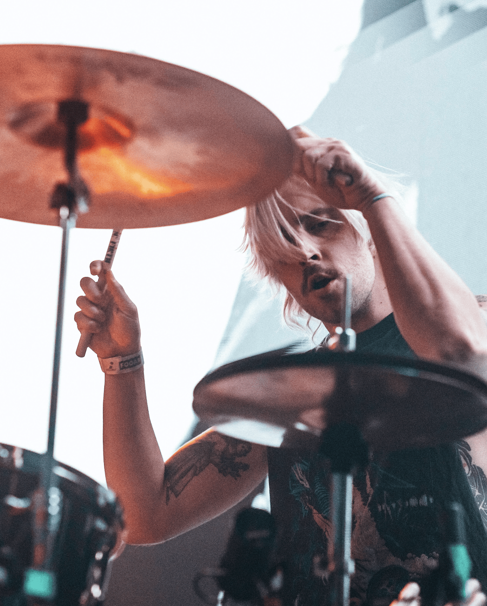

I am Lajos Dobos, based in Budapest. I graduated as a Computer Scientist from Eötvös Loránd University (ELTE). I have been playing multiple instruments—guitar, synthesizer, and drums—since childhood, performing in bands such as Kytaro, Oaken, Boru, and Sonya. In recent years, my focus has shifted towards experimental electronic music, creating ambient live sets and launching my electronic solo project under the name Dronaldo.
Currently, I am pursuing a BA in Media Design at the Moholy-Nagy University of Art and Design (MOME). This academic path has led me to expand my creative scope into directing, creating installations, visual design, and art direction. During my studies at MOME, I also spent a semester abroad at Chung-Ang University in South Korea, studying Psychology.
Alongside my design studies, I am completing an art therapy program at MMSZKE. Professionally, I work as a programmer and create animations for MotionFiles.
lajos.dobos92@gmail.com
+36 30 090 5109
dronaldo___